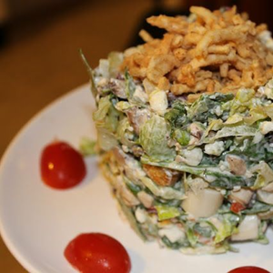
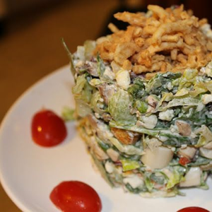
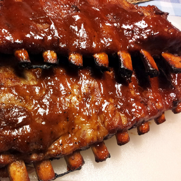
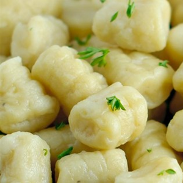
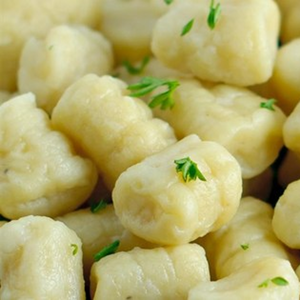

Baking
 Bagels
Bagels Challah
Challah Fluffy Pancakes
Fluffy Pancakes Gluten-Free Flour
Gluten-Free Flour Pizza
Pizza Rosemary Dinner Rolls
Rosemary Dinner Rolls Southern Buttermilk Biscuits
Southern Buttermilk BiscuitsSoups
Caldo Verde Clam Chowder
Clam Chowder Cream of Spinach Soup
Cream of Spinach Soup Curry Butternut Squash & Apple Soup
Curry Butternut Squash & Apple Soup French Onion Soup
French Onion Soup Hungarian Mushroom Beef Soup
Hungarian Mushroom Beef Soup Winter Lentil Soup
Winter Lentil SoupSalads
 Caesar Salad
Caesar Salad Cucumber SaladRuth's Chris Chopped Salad
Cucumber SaladRuth's Chris Chopped SaladMain Dish
BBQ Pork Ribs Beef Bourguignon
Beef Bourguignon Butter Chicken
Butter Chicken Chicken Cordon Bleu
Chicken Cordon Bleu Chicken Pot Pie
Chicken Pot Pie Chicken Breasts with Caper Cream Sauce
Chicken Breasts with Caper Cream Sauce Chole
Chole Garlic Prime RibGnocchi
Garlic Prime RibGnocchi Kielbasa and Cabbage
Kielbasa and Cabbage Kofta Kebabs
Kofta Kebabs Lemon Chicken with Mushroom Sauce
Lemon Chicken with Mushroom Sauce Orange Chicken
Orange Chicken Ratatouille
Ratatouille Ricotta Meatballs
Ricotta Meatballs Roast Leg of Lamb with Rosemary
Roast Leg of Lamb with Rosemary Shrimp with Sweet Potatoes and BaconSloppy Joe Sandwiches
Shrimp with Sweet Potatoes and BaconSloppy Joe Sandwiches Stuffed Green Peppers
Stuffed Green PeppersSides
 Bok Choy with Garlic
Bok Choy with Garlic Bourbon Glazed CarrotsCreamed SpinachGarlic Broccoli
Bourbon Glazed CarrotsCreamed SpinachGarlic Broccoli Hummus
Hummus Pommes PuréeSauteed Mushrooms
Pommes PuréeSauteed Mushrooms Sweet Potatoes with Honey and Rosemary
Sweet Potatoes with Honey and Rosemary Tzatziki
Tzatziki